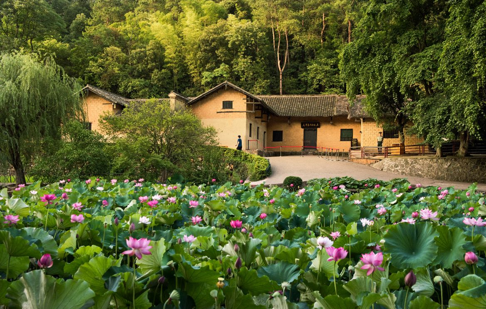
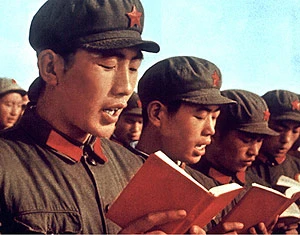
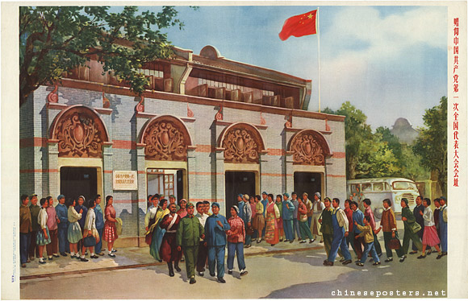
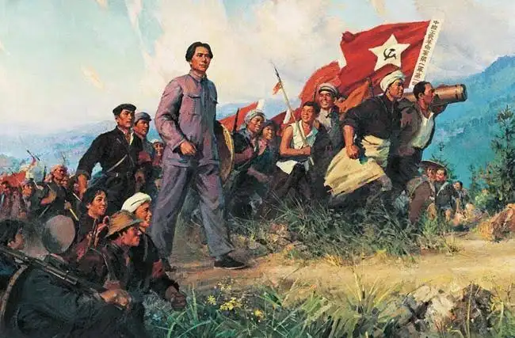
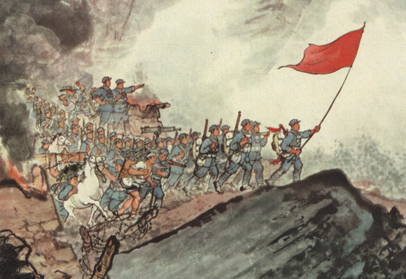
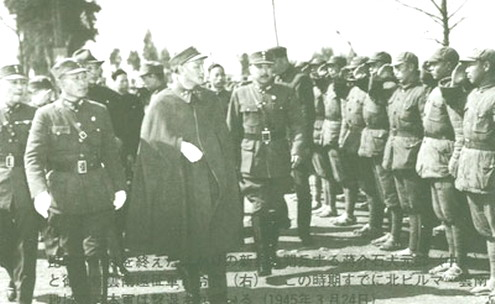
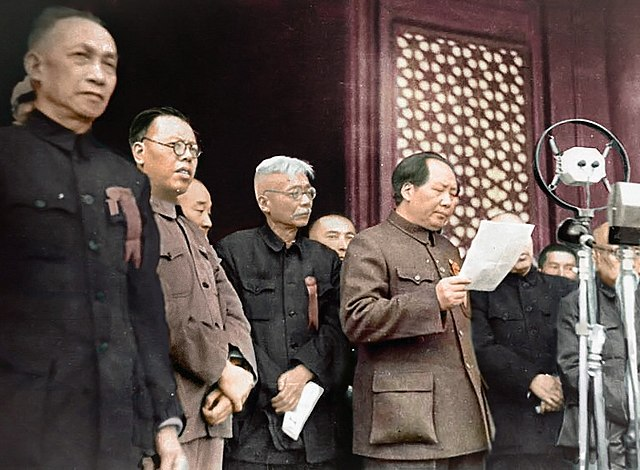
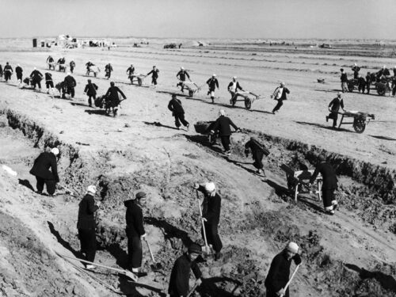
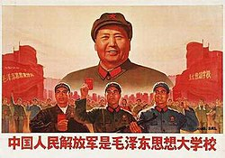
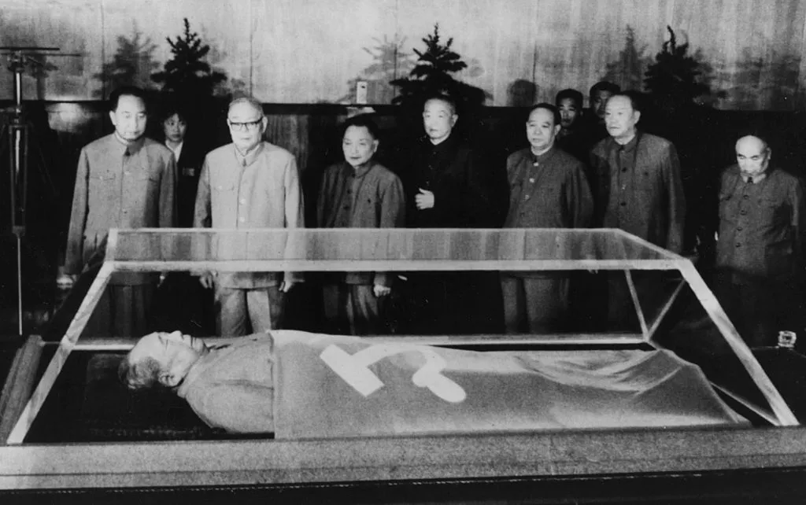

The Life of Mao Zedong
Explore the key events in the life of Mao Zedong, founding father of the People's Republic of China by Edison Lin
Birth
Mao Zedong was born on December 26, 1893, in Shaoshan, Hunan Province, China. He was born into a wealthy peasant family, as his father was a successful
Revolution and Education
Mao experienced the 1911 Revolution that overthrew the Qing Dynasty. He enrolled and continued his education at the Changsha Middle school, where he began developing his political ideas. He read books on Marxism, nationalism, and economics. At Peking University, though only working as a library assistant, he immersed himself in radical political thought and met key individuals who fueled his belief that China’s future lay in overthrowing the old order. These influences sparked Mao’s belief that true change would come not from elites, but from mobilizing the peasantry in a massive upheaval.
Communist Party Founding
The Chinese Communist Party was founded by Chen Duxiu and Li Dazhao, but Mao founded the branch in Changsha. Small branches were held all over China, and 13 delegates, Mao one of them, came together to discuss their future. Additionally, in August 2021, Mao founded the Self-Study University, where readers could access revolutionary literature.
Autumn Harvest Uprising
After the Kuomintang-Communist alliance broke down, Mao led the Autumn Harvest Uprising in Hunan. Though initially unsuccessful, this marked the beginning of Mao's military leadership and guerrilla warfare strategy. Mao was quickly appointed as leader of the Red Army, but ultimately was defeated and only 1000 communist survivors remained.
The Long March
Mao led Communist forces on the famous Long March, a 6,000-mile retreat from Kuomintang forces. Although at the end, only 8000 of 100000 members remained, Mao was attributed to their survival, granting him the status of undisputed leader of the communist party.
War Against Japan

During the Second Sino-Japanese War, Chiang Kai-shek was occupied with the Japanese and his forces were weakened, allowing Mao's forces to grow stronger and stronger.
Chinese Civil War
After WWII, civil war resumed between the Communists and Kuomintang. The communist forces had a total of 3.2 million troops. Mao's forces eventually defeated Chiang Kai-shek's Nationalist government, forcing them to retreat to Taiwan.
Founding of the People's Republic
On October 1, 1949, Mao proclaimed the founding of the People's Republic of China from atop Tiananmen Gate. This marked the beginning of Communist rule in China with Mao as the country's paramount leader.
The Great Leap Forward
Mao initiated the Great Leap Forward, an economic campaign aimed at rapidly transforming China from an agrarian economy to an industrial powerhouse. The food production decreased rapidly, causing immense starvation and famine. Civilians were forced to eat dogs, rats, bark, and even each other. In the end, approximately 30 million starved as a result.
Cultural Revolution
Mao launched the Cultural Revolution in 1966, where he aimed to diminish any anti-communist forces and maintain his totalitarian authority. Many youth rose up, fighting against their own families, teachers, and others. Violence plagued China, and 1-2 million died as a direct result.
Death and Legacy
As a result of his poor habits, Mao's health declined rapidly, and he died on 9 September 1976, at the age of 82. While he has both accomplishments and faults, a clear consensus cannot be reached, and views of Mao are heavily opiniated. Yet, he remains one of the most influential 20th century leaders.